台湾の朝ごはんを満喫する [旅行記]
2日目は早起きして６時前にはホテルをチェックアウト。
飛行機のインタウンチェックインをして朝ごはんを食べに行きますよー。
ホテルの目の前がマックでフロントスタッフに「出前もできますよ」なんて言われましたが
旅先でそんなものを食べるわけがない！

ここ四海豆漿大王で朝ごはん。
豆漿は豆乳のことです。世界を股にかける豆乳の王様だよ！が店名の意味でしょうか(*>艸<)
店の前にバイクがたくさん並んでいるのはお客さんがバイクでやってくるわけでも
隣がバイク屋さんという訳でもありません。
これが台湾の駐車場事情で道路と歩道の間に延々とバイクが止められていました。
大阪だったら根こそぎ盗難にあいそうなんですけどw

着席して厨房の方（表に面してます）をパチリ。昭和の食堂って感じでしょ＾＾
客層は地元の人が９割くらいでしょうか。テイクアウトの人が多いです。
旅行者で写真を撮っているのが珍しいのかおっちゃんがめちゃ見てますw
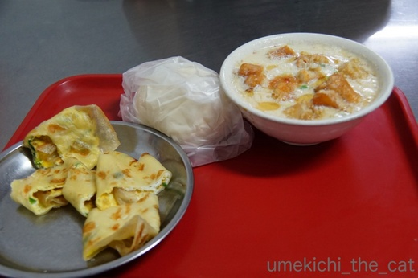
ぜんぜんインスタ映えしない写真ですが・・・（食べ物の並びが悪！）
右上に見えているのが台湾の伝統的な朝ごはん鹹豆漿（シエンドウジャン）。
鹹は塩辛いという意味なので塩辛い豆乳ですね。
鶏がらスープ（？）の中におぼろどうふ状の豆乳、ザーサイ、干しエビ
そして油條（ヨウティアオ）といわれる揚げパンみたいなのが入っていて
ごま油がほんのり効いています。
これが優しい味でクセになります。
ちなみに油條（ヨウティアオ）は甘くないチュロス、または仙台麩が近いでしょうか。
旅行から帰ってきて鹹豆漿を再現してみた時には仙台麩を使いました。
そのほか頼んだのは蛋餅(ダンピン)＝甘くないクレープと卵焼きをくるっと丸めたものと肉まん。
これを二人でシェア。
肉まんは（大阪は豚まんいいます）蓬莱551の方が好みでした（爆）
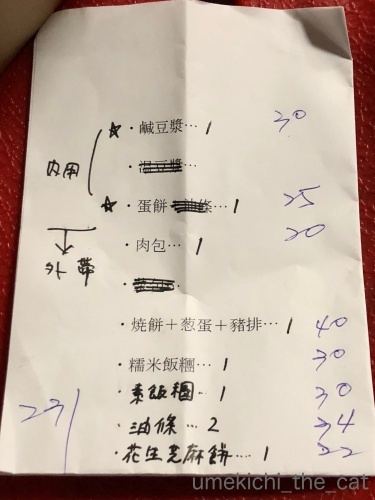
この後新幹線で台南に向かうので全部テイクアウトの予定でしたが
予想外に時間があったのでお店でもぐもぐタイム。
注文は朝の忙しい時間にお店の方を混乱させても困るので紙に書いて行きました。
漢字の国同士なのがありがたい。
内用（ネイヨウ）はお店で食べること。外帯（ワイタイ）はテイクアウトのことです。
持ち帰り可能な飲食店では必ず聞かれることなので覚えておくと便利な言葉ですよー。
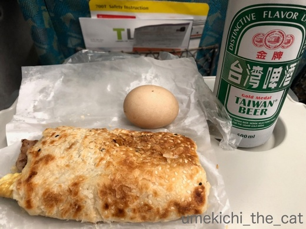
新幹線の中ではビール付き＾＾
焼餅（パン生地を薄く伸ばしてカリッと焼いたもの）にネギ入り卵焼きと
台湾味の薄切り豚肉焼きがはさまったもの、コンビニで買った味付き卵。
焼餅はカリッとサクッとしていて粉もん好きにはたまりません。
朝からビールが進むよ！

車窓からは台湾の田園地帯が望めました。
田んぼはとうに田植えが終わって稲が育ってます。
このほかパイナップル畑タロイモ畑が確認できました。
台湾は農業国だなー。
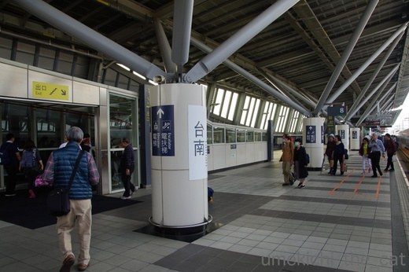
台南駅に到着。台北からは1時間40分くらいで到着します。
途中曇り空でしたが台南に着いた時は快晴。
ダウンベストを着ている人がいますがこの時すでに25℃はあったと思う。
高鉄の台南駅から台南市内へはアクセスが悪いのでタクシーで向かいました。
台湾のタクシーは運転がこわい・・・
台北のタクシーよりは安全運転でしたが
信号が赤に変わった直後なら止まることなくぐいぐい進みますw
路線バスも運転が乱暴で乗客が乗り込んだらすぐにドアを閉めて発車。
座るまでなんて待っててくれません。
機会があったら乗ってすぐに安全確保をしてくださいね。
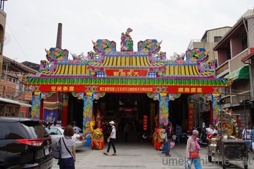
街に出ても主なお店は11時くらいが開店らしくどこもシャッターが閉まってます。
日曜だったから営業自体していなかったのかも。台南、ゆるいです。
なので寺院巡りをしますよ。
わ、派手。

違うお寺。ここも派手。電飾ピカピカで圧倒されます。
日本の極彩色とは何かが違う。

２件見て原色派手派手に目がチカチカしてきたので
狛犬さんに挨拶をして市場に移動しました。
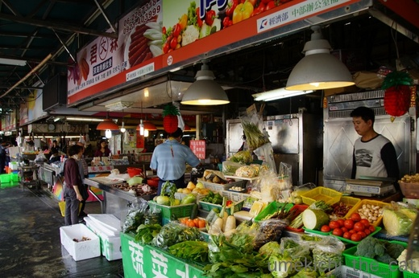
暖かい地域だけあって日本より２〜３ヶ月先の作物がとれているようでした。
とうきびがハシリだったらしく店先で茹でて売っているお店は大にぎわいでしたよ。
（とうきびって北海道弁かい？）

大きな市場で食料品、衣料品、日用雑貨なんでも売っていました。
お野菜が新鮮で美味しそうだったなー。

あの大きな淡水魚みたいなのはなんだろう。
活気に満ちた市場を後にしてお昼ご飯に向かいます。
 ↑ガブッと一押し↑
↑ガブッと一押し↑
怖い顔してますがごきげんなんです。ただ真剣なだけ。
おとーさんのお腹の上でちゅうちゅうを堪能する梅吉さん。
飛行機のインタウンチェックインをして朝ごはんを食べに行きますよー。
ホテルの目の前がマックでフロントスタッフに「出前もできますよ」なんて言われましたが
旅先でそんなものを食べるわけがない！

ここ四海豆漿大王で朝ごはん。
豆漿は豆乳のことです。世界を股にかける豆乳の王様だよ！が店名の意味でしょうか(*>艸<)
店の前にバイクがたくさん並んでいるのはお客さんがバイクでやってくるわけでも
隣がバイク屋さんという訳でもありません。
これが台湾の駐車場事情で道路と歩道の間に延々とバイクが止められていました。
大阪だったら根こそぎ盗難にあいそうなんですけどw

着席して厨房の方（表に面してます）をパチリ。昭和の食堂って感じでしょ＾＾
客層は地元の人が９割くらいでしょうか。テイクアウトの人が多いです。
旅行者で写真を撮っているのが珍しいのかおっちゃんがめちゃ見てますw
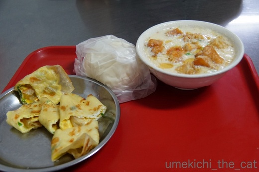
ぜんぜんインスタ映えしない写真ですが・・・（食べ物の並びが悪！）
右上に見えているのが台湾の伝統的な朝ごはん鹹豆漿（シエンドウジャン）。
鹹は塩辛いという意味なので塩辛い豆乳ですね。
鶏がらスープ（？）の中におぼろどうふ状の豆乳、ザーサイ、干しエビ
そして油條（ヨウティアオ）といわれる揚げパンみたいなのが入っていて
ごま油がほんのり効いています。
これが優しい味でクセになります。
ちなみに油條（ヨウティアオ）は甘くないチュロス、または仙台麩が近いでしょうか。
旅行から帰ってきて鹹豆漿を再現してみた時には仙台麩を使いました。
そのほか頼んだのは蛋餅(ダンピン)＝甘くないクレープと卵焼きをくるっと丸めたものと肉まん。
これを二人でシェア。
肉まんは（大阪は豚まんいいます）蓬莱551の方が好みでした（爆）
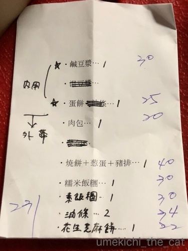
この後新幹線で台南に向かうので全部テイクアウトの予定でしたが
予想外に時間があったのでお店でもぐもぐタイム。
注文は朝の忙しい時間にお店の方を混乱させても困るので紙に書いて行きました。
漢字の国同士なのがありがたい。
内用（ネイヨウ）はお店で食べること。外帯（ワイタイ）はテイクアウトのことです。
持ち帰り可能な飲食店では必ず聞かれることなので覚えておくと便利な言葉ですよー。
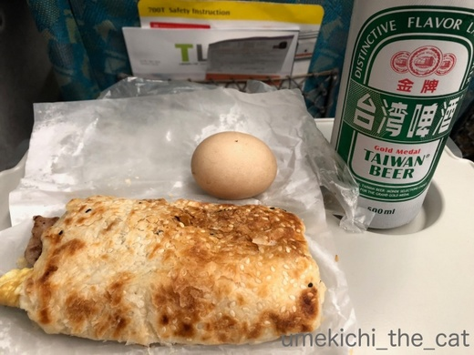
新幹線の中ではビール付き＾＾
焼餅（パン生地を薄く伸ばしてカリッと焼いたもの）にネギ入り卵焼きと
台湾味の薄切り豚肉焼きがはさまったもの、コンビニで買った味付き卵。
焼餅はカリッとサクッとしていて粉もん好きにはたまりません。
朝からビールが進むよ！

車窓からは台湾の田園地帯が望めました。
田んぼはとうに田植えが終わって稲が育ってます。
このほかパイナップル畑タロイモ畑が確認できました。
台湾は農業国だなー。
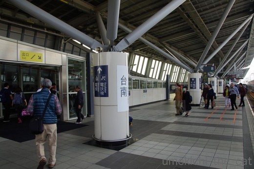
台南駅に到着。台北からは1時間40分くらいで到着します。
途中曇り空でしたが台南に着いた時は快晴。
ダウンベストを着ている人がいますがこの時すでに25℃はあったと思う。
高鉄の台南駅から台南市内へはアクセスが悪いのでタクシーで向かいました。
台湾のタクシーは運転がこわい・・・
台北のタクシーよりは安全運転でしたが
信号が赤に変わった直後なら止まることなくぐいぐい進みますw
路線バスも運転が乱暴で乗客が乗り込んだらすぐにドアを閉めて発車。
座るまでなんて待っててくれません。
機会があったら乗ってすぐに安全確保をしてくださいね。
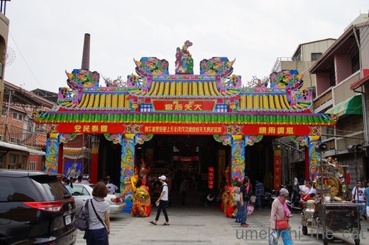
街に出ても主なお店は11時くらいが開店らしくどこもシャッターが閉まってます。
日曜だったから営業自体していなかったのかも。台南、ゆるいです。
なので寺院巡りをしますよ。
わ、派手。

違うお寺。ここも派手。電飾ピカピカで圧倒されます。
日本の極彩色とは何かが違う。

２件見て原色派手派手に目がチカチカしてきたので
狛犬さんに挨拶をして市場に移動しました。
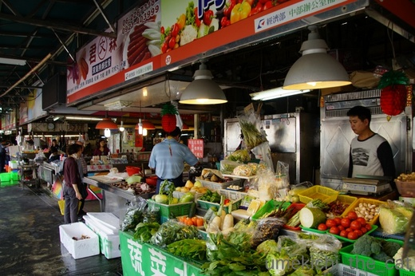
暖かい地域だけあって日本より２〜３ヶ月先の作物がとれているようでした。
とうきびがハシリだったらしく店先で茹でて売っているお店は大にぎわいでしたよ。
（とうきびって北海道弁かい？）

大きな市場で食料品、衣料品、日用雑貨なんでも売っていました。
お野菜が新鮮で美味しそうだったなー。

あの大きな淡水魚みたいなのはなんだろう。
活気に満ちた市場を後にしてお昼ご飯に向かいます。
怖い顔してますがごきげんなんです。ただ真剣なだけ。
おとーさんのお腹の上でちゅうちゅうを堪能する梅吉さん。

カフェオレ色の梅吉

梅吉 2023年8月10日 永眠


梅吉と出会った譲渡会

犬猫の理由なき殺処分ゼロ
妄想広告
UMEKICHI 光

爆発的に早い！
時々攻撃的！
Thanks to Mr.Boss365
爆発的に早い！
時々攻撃的！
Thanks to Mr.Boss365

う〜〜ん、やっぱ５５１ですか？！
でも、美味しそうな朝ご飯ですね！^ ^
by KENT0mg (2018-03-19 15:58)
なんか台湾楽しそう～(*^_^*)
注釈がないと梅吉君ご機嫌ナナメかと・・・
by palpal (2018-03-19 16:11)
内用＝店内、外帯＝持ち帰り(^O^)ﾒﾓﾒﾓ
朝ご飯、どれも体に優しく美味しそうですねぇ＾＾
でも肉まんは５５１の方が^^;
梅吉さん、こんな真剣な顔して甘えてるんですね(^-^)
by ニッキー (2018-03-19 16:22)
台湾を満喫してらっしゃぃますねー。焼餅がおいしそうです。
梅吉さんがちゅうちゅうしてるのはおとーさんのお腹じゃないですよね。
by zombiekong (2018-03-19 16:39)
うわぁぁぁ。めちゃめちゃ美味しそう♡
粉モン、大好き！ ほんのり甘いもん、大好物！！
炭水化物天国。あぁ、食べたい……（涎）
そっか。紙に書いてのオーダーは、賢い～。
ちぃさん、全てをスマートにこなしてらっしゃる。カッコいい♡
そして、台湾の寺院はポップですねぇ。極楽感、半端ないわーｗｗｗ
余談ですが、青森でトウモロコシは「きみ」と言うのですよ(^^♪
by morichan (2018-03-19 16:54)
うわ〜美味しそう！
台湾、いいな〜♪
by nachic (2018-03-19 17:12)
台湾行ったら朝はお粥ですよね～♪
ビールのお供の焼餅も美味しそう！ 粉もんフェチの関西人にはたまらない一品です(*^▽^*)
一泊二日とは思えない濃いグルメツアーですね！
おとーさん、いつもこんな梅吉さんの目に見つめられているのですね(^▽^;)
ウチのもそうですが、ふみふみもうんＰも、何をする時もお猫様は真剣勝負。それが可愛くもあり、面白くもありです^^
by ゆきち (2018-03-19 17:54)
美味しそう！
へ～えぇ、ほお～っとひたすら感心♪
台湾行ったことないので（‥そもそもアジア旅行がない）、詳しいリポート嬉しいです。
梅吉さん、真剣？
真剣にちゅうちゅう堪能ですか。いやん、可愛い～＾＾
by sana (2018-03-19 19:33)
台湾では朝食は外で食べるのが一般的みたいですね！
梅吉さんは何を見つめているのでしょうか(^^)
by ma2ma2 (2018-03-19 19:39)
朝ごはん、美味しそうですね〜
新幹線の中の焼餅と味付き卵、この時間よだれが出そうです。
お腹空きました（笑）
梅吉さん、真剣な顔ですか？
ちゅうちゅうしているのですか？
甘えん坊ですね。
by kiki (2018-03-19 21:53)
とうきびです。
田舎の徳島ではそう呼んでいました。
懐かしいです。久しぶりに聞きました(^^;
おっちゃんはちぃさんに見惚れてるんですね(^^)
by riverwalk (2018-03-19 22:07)
朝ごはん、美味しそう。食べてみたいですー。
それにしてもバイクの並び方、間隔が狭いけれど
どうやって置いたのでしょう？
内用と外帯、ここでお聞きしなかったら
内服薬と包帯だと思ったかも知れません。^^;
by yes_hama (2018-03-19 22:19)
ちゃんとオーダーを紙に書いていくなんて
良い考えですね！＾＾
台湾の寺院の鮮やかさが大好きです♪
食堂もホント、昭和のにおいがプンプンして
楽しいですね～(≧▽≦)
梅吉さん、チュウチュウしてるんだ～(´艸｀＊)かわいい～＾＾
by マーヤ (2018-03-19 22:53)
耳下がってますけど
怒ってないですよね＾＾；
by ぽちの輔 (2018-03-20 05:58)
粉モンとビール。
なんて素敵な楽しみ方！
ますます行きたくなりました（≧∇≦）
by よーちゃん (2018-03-20 08:32)
旅先でマックなんてありえないですよね！(笑)
あー、こういう朝ご飯食べたい！
甘くないチュロス、、、チュロス、、、想像してみましたが
人生で数回しか行ったことのないミスドのチュロスしか浮かばなくて
やっぱり口の中には砂糖の甘さが蘇っちゃいました(笑)
梅吉くんの真剣顔！
わかるわ！この顔は間違いなくご機嫌ねｗｗ
by リュカ (2018-03-20 10:12)
私、普段は朝ごはん食べないことの方が多いんだけど
旅行の時は別。お腹が空いて目が覚める感じになりますｗ
お粥食べたい～。今すぐ食べたい～。
ちゅぱちゅぱ、ふみふみしているときの表情は・・・真剣過ぎて確かに怖いですｗ
幸せ満喫中のお顔なのにね(≧▽≦)
by emi (2018-03-20 18:10)
台湾グルメツアー、満喫されていますね。
お味を想像して楽しませて頂いています。
漢字を見ただけでは中身がわからなそう
だけど、下調べして行かれたのでしょうか。
真剣すぎる表情の梅吉さん、ブロマイドに
なりそうなカメラ目線が決まってますネ。
by うりくま (2018-03-21 00:34)
台湾といえば、朝ごはんも楽しそうですよね。
しかもコスパよし。マクドのン十分の１くらいだったり？
（台湾でもマクドはお高いのかしら）
これって、いわゆるお粥感覚なのでしょうかね。
梅吉くん、ちゅうぅちゅぅするんだ（*´艸｀*）かわいい♡
by Ja-Kou66 (2018-03-22 00:02)
KENT0mgさん＞
蓬莱551の実力、おそるべしですよ！！
アジア人観光客の多い地区の店舗に
人だかりがしている理由がわかりましたw
palpalさん＞
そうなのー。台湾楽しいですよ。
欧米って緊張しちゃうんだけど
台湾は肩の力を抜いて楽しめます＾＾
治安が日本とそう変わらないのも理由かな。
ニッキーさん＞
おぼろ豆乳の鹹豆漿は優しいお味でヘルシーなので
日本でも女性にウケると思うのですが
お店で出している、という話をあまり聞いたことがないのが残念です。
蓬莱551は神！！ちなみに神戸南京町の老祥記も神です！！
zombiekongさん＞
お腹、ぼよんぼよんしていて（本人は違う！と言ってますw)
吸い心地も良さそうですが梅吉のちゅうちゅうはブランケットなんですよー！
そう言えば知人（女性）の猫は知人の二の腕をちゅうちゅうするそうです (^▽^;)
そう、ぼよんぼよんしてた・・・・
morichanさん＞
台湾の屋台は確かに炭水化物天国なんです (^▽^;)
ちゃんとしたレストランに行くと野菜の料理もたくさんあるし
八百屋さんには新鮮そうな野菜がたくさんあるので
台湾の方々はウチとソト、食べるもののバランスを上手く取っているのかな
とも思いましたよー＾＾
トウモロコシは「きみ」！
北海道でも野菜を庭先で売っている農家地帯に行くと
「とうきみ」「とうちみ」って買いてあるのを時々見かけたのです。
あの方々は青森あたりをルーツにする方々なのかしらー。
nachicさん＞
台湾食はびっくりするくらい日本人の舌に合うと思いますよー＾＾
ゆきちさん＞
一泊二日、無駄なく淀みなく食べ歩くために計画を練りましたよー＾＾
ネットでなんでも調べられる時代
今思うと昔の自分はどうやって旅行の情報収集してたんだろう、と思うほどですw
お猫様はいつも真剣、トイレで真剣にお気張りになっているのが
一番好きだったりします(〃▽〃)
sanaさん＞
若い頃の私は欧米にしか興味がなかったのですが
最近はアジアも良いな、と思うのですよー。
飛行機に乗っている時間が短くて楽、なのも良いんですよね。
旅行記は覚書でもあるのでながながと書いちゃっていますが
もう少しお付き合いくださいね＾＾
梅吉のちゅうちゅうはいつも真剣勝負！
付き合う方も真剣に向き合わないと不満げな顔されますwww
ma2ma2さん＞
台湾は本当に外食文化だなーって思います。
家ではちゃんと作っているのか
どんな食事をしているのか覗いてみたい気がしています。
kikiさん＞
小腹が空いた時には酷な写真ですねー！わかります＾＾
味が分かっているとなおさらまた食べたい、と思ってしまいます(〃▽〃)
梅吉は甘える時でも真剣勝負。
ちゅうちゅうしているのに怖い顔、のギャップが飼い主にはたまりません！
riverwalkさん＞
徳島と北海道、方言に共通点が多いように思います。
徳島から北海道開拓に入った方々も沢山いらっしゃったのかな。
親近感湧いちゃいます＾＾
写真を撮っていたのはおっとだったので（私は背中を向けていた）
おっちゃんはおっとがタイプだったのですねー！
なんだー、ちょっと残念だわー(*>艸<)
yes_hamaさん＞
間隔、言われてみれば確かに狭いですよね！展示商品並みに！！
止めている場面には何度も遭遇してますが
皆さんささっと苦もなく止めていたので
誰もが鍛え抜かれた技を持っているのだと思われますwww
内用、外帯、ほんと、病院用語っぽい感じがしますね（爆）
マーヤさん＞
台湾の寺院のポップさにはびっくりしましたー。
台南寺院は台北のよりもさらに鮮やかでピカピカだったように感じましたよ。
でも祈っている皆さんは真剣そのもの。
お参りのお作法（長いお線香、サイコロみたいなのをひたすら投げる）
も興味深く見てまいりました＾＾
ぽちの輔さん＞
はい。怒ってませんよー＾＾
ちゅうちゅうに真剣にしゅうちゅうしているところですw
よーちゃん＞
台湾の屋台食は炭水化物てんこ盛りですよー。
ランナーの方の体調管理には大敵かもしれませんが
楽しさ＆美味しさは保証いたします！
リュカさん＞
チュロスは食べたことはあるのですね！
甘さがっつりのミスドはリュカさん向きではないお店ですねー(^▽^;)
乾燥湯葉、なんかも似た食感かもしれません。
ラー油とかテーブルに設置してある辛い香辛料を入れると
さらに風味アップで美味しいのよー鹹豆漿。
機会があったら是非是非食べて見ていただきたいです＾＾
そうそう！私は母にそっくりです。
昔デパ地下でバイトしている時バイト仲間に
「ねぇねぇ、あそこに立ってこっち見ている人お母さんじゃない？」
って言われて見たら本当に母が立ってたw
それくらい似てるのーー！！
by ちぃ (2018-03-22 16:04)
emiさん＞
実は我が家も朝ごはんを食べないんですよ。
世の中「朝ごはんを食べないのは悪！」みたいな風潮なので
あまり人様には言わないことにしているのですが・・・ (^▽^;)
朝は青汁を飲んで終了。
胃をしっかり空にする方が体調が良いみたいなのですよね＾＾
でも！旅行中はなぜか朝からお腹が空く！！
美味しいもの満載の所に来て一食抜くなんてもったなくて出来ませんw
うりくまさん＞
それはもう綿密な下調べの元に渡航しております。（おっと担当＾＾）
行きたいお店はネットで調べると詳細なメニューがいくらでも出てくるので
オーダーも日本にいる時からすでに決まっているくらいですw
もちろん旅行ですので行き当たりばったりで入って見ることもあります。
大体のお店では日本語の簡単なメニューがあるか
誰かしら日本語を喋れるのが台湾です^^
今の所そんな感じでハズレなしですー。
Ja-Kou66さん＞
お、関西式にマクドとおっしゃっていただいてありがとうございます＾＾
マクド、ケンタ、スタバ・・・台湾では近寄ったこともないので
こんど視察ということで値段を確かめてきますね(｀_´)ゞ
でも高そうですよねー。
喉が渇いたらコンビニでこれまた台湾のお水をゲットしてます。
街角には地元民で賑わうジューススタンドもたくさんあるのですが
沸かしていない生水はどうなんだろうとちょっと躊躇している次第ですw
鹹豆漿は揚げ物なんかも入っているのでおかゆよりも
もうちょっとガッツのあるお茶漬けっぽいかな、と思っています＾＾
by ちぃ (2018-03-22 18:04)